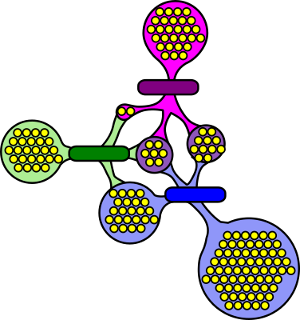

Premiers pas avec MPI#
Qu’est-ce que MPI?#
Message Passing Interface (interface de transmission de messages)
Ce n’est pas un langage de programmation
C’est une bibliothèque de fonctions qu’on peut appeler à partir du Fortran, du C ou encore du C++
C’est une norme officielle (de MPI 1.0 en 1994 à MPI 4.0 depuis novembre 2023)
Hors norme, il existe des interfaces en d’autres langages (Python, R, Perl, Java)
Par exemple,
mpi4py
Structure d’un code MPI#
Dans un programme MPI, on doit d’abord appeler la fonction
MPI_Init()Avant de terminer l’exécution, on appelle la fonction
MPI_Finalize()Tous les autres appels à MPI doivent se faire entre les deux nommés ci-dessus
Pour une fin d’exécution prématurée, un processus appelle la fonction
MPI_Abort()
MPI_init()
// Code parallèle
// En cas d’erreur
{
MPI_Abort()
}
MPI_Finalize()
Programme MPI de base#
En C :
#include "mpi.h"
int main(int argc, char **argv)
{
int ierr;
ierr = MPI_Init(&argc, &argv);
/* On insère le reste du programme ici. */
ierr = MPI_Finalize();
}
En Python :
#!/usr/bin/env python
from mpi4py import MPI # MPI.Init() implicite
def main():
"""
Programme principal
"""
MPI.Finalize()
if __name__ == '__main__':
main()
Parallélisation explicite#
C’est la responsabilité de la programmeuse ou du programmeur de dire à chaque processus ce qu’il doit faire selon son rang dans la liste des processus
Chaque processus échange avec les autres les données dont ils ont besoin pour résoudre un problème
Un code source appelant la bibliothèque MPI utilise donc (en général) le concept de programme unique travaillant sur des données multiples (Single Program, Multiple Data ou SPMD)
Communicateurs#
Un communicateur désigne un groupe de processus pouvant communiquer ensemble
La majorité des fonctions MPI prennent comme argument un communicateur pour savoir sur quel groupe de processus agir
Un communicateur initial englobe tous les processus :
On peut en créer d’autres au besoin

Nombre de processus et un rang unique#
Dans l’optique SPMD, un processus doit savoir le nombre de processus total (
size) et son rang (rank) dans le communicateurLe rang est un identifiant entier unique dont la valeur est de
0àsize-1, inclusivement
En C :
int MPI_Comm_size(MPI_Comm comm, int *size)
int MPI_Comm_rank(MPI_Comm comm, int *rank)
size = comm.Get_size()
rank = comm.Get_rank()
Exemple en C - demos/bonjour.c#
#include <stdio.h>
#include <mpi.h>
int main(int argc, char *argv[])
{
int p, np;
MPI_Init(&argc, &argv);
MPI_Comm_rank(MPI_COMM_WORLD, &p);
MPI_Comm_size(MPI_COMM_WORLD, &np);
printf("Ici le processus %d de %d\n", p, np);
MPI_Finalize();
return 0;
}
Exemple en Python - demos/bonjour.py#
#!/usr/bin/env python
from mpi4py import MPI # MPI.Init() implicite
def main():
"""
Programme principal
"""
p = MPI.COMM_WORLD.Get_rank()
np = MPI.COMM_WORLD.Get_size()
print(f'Ici le processus {p} de {np}')
MPI.Finalize()
if __name__ == '__main__':
main()
Environnement requis pour utiliser MPI#
En C :
Un module permettant de compiler et d’exécuter un programme MPI est chargé par défaut (
openmpi/4.1.5)Pour voir tous les modules chargés :
module list
Pour voir les différentes versions disponibles de Open MPI :
module spider openmpi
Pour voir les dépendances possibles :
module spider openmpi/4.1.5
En Python :
Un module
mpi4pyest requis, mais n’est pas chargé par défaut :
module spider mpi4py
module spider mpi4py/3.1.4
module load mpi4py/3.1.4 # python/3.11.5 est chargé automatiquement
Compilation d’un programme MPI#
En C :
Lorsque l’environnement est adéquatement configuré pour la version désirée de MPI, on a accès aux commandes
mpif90,mpiccetmpicxxque l’on peut utiliser à la place des compilateurs Fortran, C et C++, respectivement. Par exemple :
mpicc -o programme source.c
Ces commandes trouvent les fichiers d’inclusion et les bibliothèques ou les modules Fortran nécessaires à MPI
En Python :
La compilation se fait lors de l’exécution du script.
Lancement d’un programme MPI#
Le lancement d’un programme MPI se fait typiquement à l’aide d’une
commande souvent appelée mpirun ou mpiexec. Par exemple :
mpiexec -n 120 ./programme
# ou
mpiexec -n 120 python script.py
Notes :
Chacune des commandes ci-dessus lancerait 120 processus identiques, chacun exécutant le
programmeoupythonsur un processeurAvec l’ordonnanceur Slurm, nous allons plutôt utiliser la commande
srun
Exemple d’exécution#
$ srun -n 10 hostname
compute-node2
compute-node2
compute-node2
compute-node2
compute-node2
compute-node1
compute-node1
compute-node1
compute-node1
compute-node1
$
Exercice #1 - Premier lancement#
Validez les modules et chargez les modules manquants, au besoin :
module list
module load ...
Dans le répertoire
demos/, compilez le codebonjour.cou localisez le fichierbonjour.pyAvec
srun, lancez 4 processus en parallèle avec l’exécutable compilé ou avecpython
Les communications via MPI#
Types de données#
En C :
Les fonctions MPI transférant des données sont conçues de façon générique et peuvent donc traiter des données de différents types
Par exemple, en C/C++, pour envoyer des nombres à virgule flottante à double précision, on utilisera les fonctions de communication avec l’argument
MPI_DOUBLEOn peut passer des scalaires ou des vecteurs, mais on doit indiquer le nombre d’éléments du type indiqué
Les principaux types de données sont :
Type en C/C++ |
Type MPI |
|---|---|
|
|
|
|
|
|
|
|
|
|
|
|
En Python :
La bibliothèque
mpi4pysérialise automatiquement tout objet et envoie simplement un vecteur d’octetsÀ la réception d’un message, l’objet est reconstitué
La gestion des types se fait donc automatiquement
Types de communications#
Il y a deux grands types de communications :
Communications point-à-point (chapitre 3) : deux processus d’un même communicateur communiquent au moyen de deux actions :
Un envoi
Une réception
Communications collectives (chapitre 4) : tous les processus d’un même communicateur appellent la même fonction et communiquent ensemble